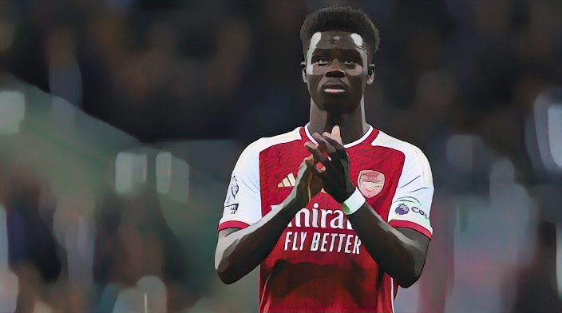

The last blogs I published ..

The international football records Messi owns and is chasing
Messi has unbelievably scored 25 goals in his last 17 internationals – a feat that hasn’t been matched in the last 50 years. Only 11 players in football history have registered 25 goals in a fewer span of appearances for their country.
Tottenham’s Chaotic Clash Reveals ‘Angeball’ Test
In a frenetic derby clash, Tottenham Hotspur’s unbeaten record came to a halt as Chelsea claimed a 4-2 victory. While the scoreline may tell one story, the real drama unfolded in the chaotic details of the match.

Arsenal’s Dominant Win Boosts Champions League Prospects
In a dazzling display of skill and determination, Arsenal secured a pivotal 2-0 victory over a struggling Sevilla side, catapulting them closer to the coveted Champions League knockout stages.
Bouchard: I could not get a court to play on
Tennis in Canada is on the rise, so much so that Eugenie Bouchard was struggling to get a practice court in the build up to the 2023 Billie Jean King Cup by Gainbridge Finals.
Carlos Alcaraz in shock defeat to Roman Safiullin.
Carlos Alcaraz lost his first opening match at a tournament for the first time in 2023 after Roman Safiullin clinched a shocking 6-3 6-4 win at the Paris Masters